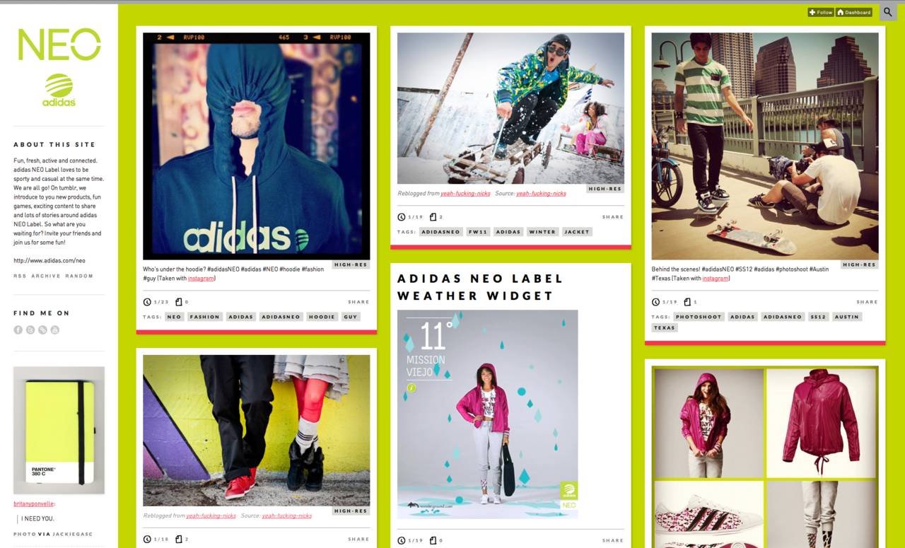
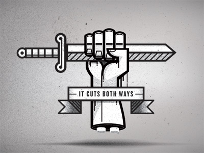
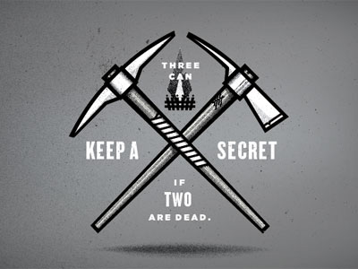
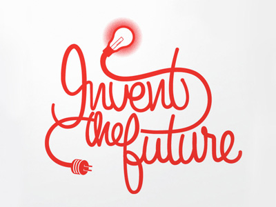
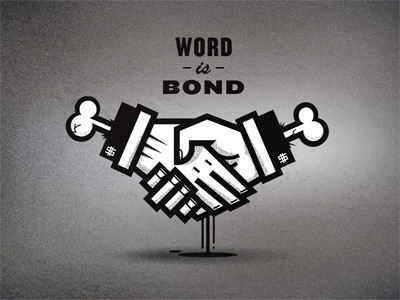
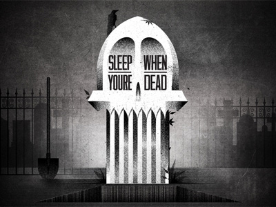
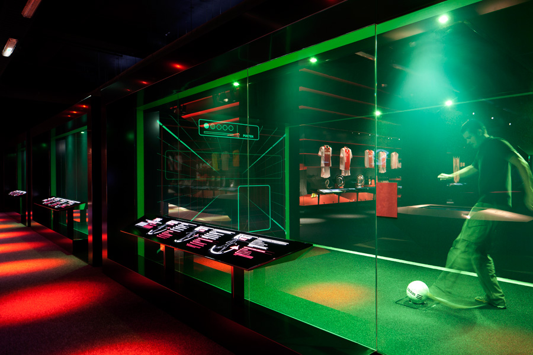
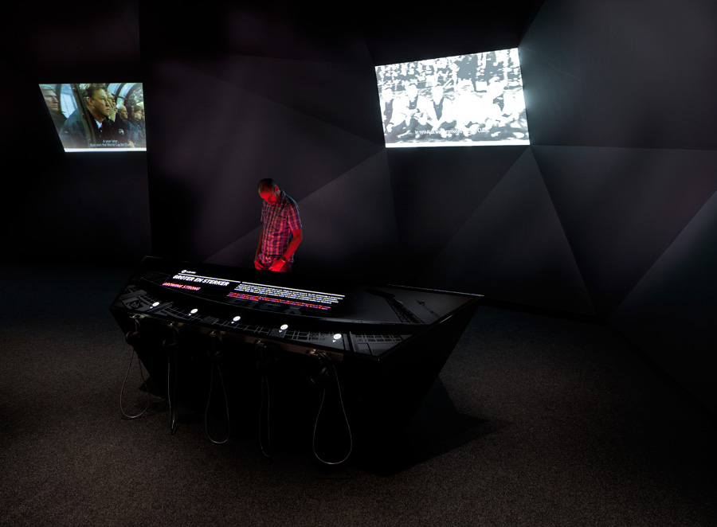
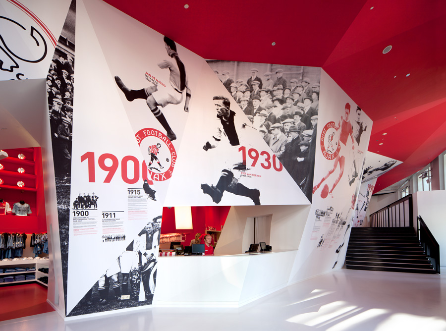
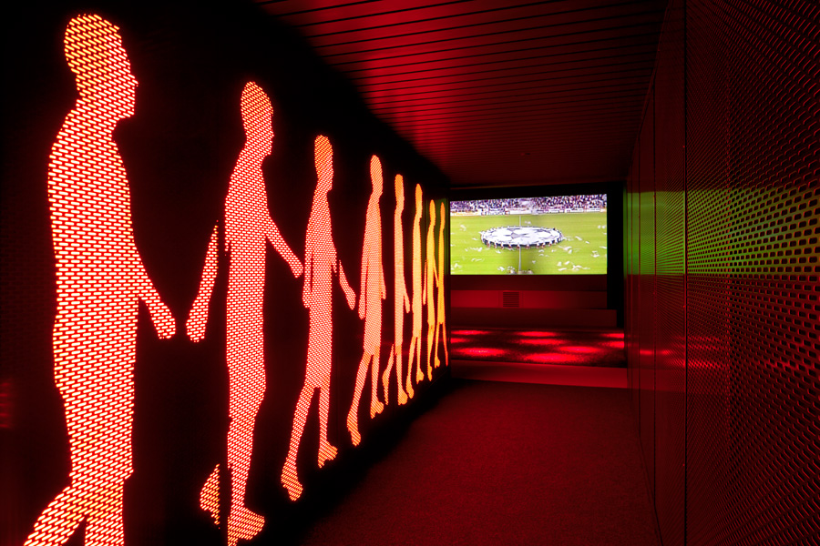

January 2012
01/30/2012 09:26:09
¶
●
A showcase of the best typefaces from the Google web fonts directory.
Out of the 404 web fonts currently on Google Fonts, Chad Mazzola put together a collection of some of the better fonts available. Watch the repo on GitHub.
Additionally Sacha Greif recently published a great article, Google Webfonts That Don’t Suck.
#design #Typography #font #google
01/27/2012 10:34:42
¶
●
Marina Bay Sands Base Jump
If I’m ever in Singapore, staying at the Marina Bay Sands hotel will be at the top of my list solely because of their zero line pool up on the 57th floor. This last New Years Day seven base jumpers used the Skypark deck to get their adrenaline fix as they leaped off the edge.
#hotel #singapore #action sports
01/23/2012 17:26:35
¶
●

YouTube - One Hour Per Second
To celebrate YouTube’s milestone of having one hour of video uploaded ever second they launch One Hour Per Second filled with hilarious collection of facts, animations and sound effects to help break it down into terms we all can understand.
In 7 minutes of uploads to YouTube, the Nyan cat persists in saying “Nyan" over 6,048,000 times.
Thanks for the link Jess
#animation #lol #sound #tech #youtube #html
01/23/2012 12:04:09
¶
●

adidas NEO Label
It interesting watching brands navigate their way onto Tumblr. The ones that do well clearly understand the unique culture behind the Tumblr community. Brands and everyone on Tumblr should take these guidelines for posting to heart in this order (Source - Seth Godin | The TED imperatives):
- Be interested.
- Be generous.
- Be interesting.
- Connect.
As a bonus they did a fantastic job customizing our Style Hatch premium theme Juuvy. Other brands that we have noticed who are doing great job on Tumblr and using one of our themes:
#tumblr #style hatch #themes #brands
01/20/2012 16:41:00
¶
●
Soundmachines
Three units, which are resembling standard record players, translate concentric visual patterns into control signals for further processing in any music software. The rotation of the discs, each holding three tracks, can be synced to a sequencer.
The Berlin-based studio The Product for “spatial and media-related design” created the Soundmachines for VW’s premiere of the 2012 Beetle at the IAA Motor Show.
#tech #music #agency #cars
01/19/2012 15:14:00
¶
●






Nick Agin
Illustrations and sketches based off of common figures of speech by NYC graphic designer Nick Agin. Check out more of his shots on Dribbble.
#design #illustration
01/19/2012 11:35:04
¶
●
We found the startups that did best were the ones with the sort of founders about whom we’d say “they can take care of themselves." The startups that do best are fire-and-forget in the sense that all you have to do is give them a lead, and they’ll close it, whatever type of lead it is.
— Paul Graham on the correlation between resourcefulness and success in startups.
I am incredibly thankful for my years at 2Advanced back in the fast-paced, mid-2000s Flash era. Everyone who worked on that team during that period of time learned the value of resourcefulness as you were expected to often single handedly art direct, animate, and develop large campaigns all while managing the clients. The level of expectation, stress and demand was high, but whether or not it was the best approach to it developed a character of resourcefulness by fire.
#ideas #character #startup
01/17/2012 10:29:40
¶
●
Square’s front door to customers is a smartphone application. Square has to provide the simplest experience possible, Mr. Dorsey believes, because, along with good design, it will evoke trust and confidence in a new financial institution that lives in a smartphone.
Yet another example that strategic differentiation begins with design.
#ideas #design #startup
01/13/2012 11:18:34
¶
●
Love your craft everyday. Design the simplest, most delightful product you can. Write organized, performant and readable code. Watch people use your product and make it better for them. Improve your work by learning from others and from your own experiences. Help create a better web for its 2 billion users.
Dave Gamache
From his article Craftsmanship - Quality, Passion, and Excellence
#design #craftsmanship #internet #tech
01/12/2012 16:38:21
¶
●




The Ajax Experience
Commissioned by the 100 year-old Ajax Amsterdam football club, Sid Lee Architecture in collaboration with gsmprjct° created a truly immersive fan experience for the legendary team.
Walking into the museum you go through the hall of “Giants" visualizing the important club members and glorious moments. Through the hall you travel into The Ajax Academy filled with multimedia rooms and interactive training areas. Once you have practiced your technique and speed hear an inspiring speech from the club’s coach and head into the stadium to hear the roar of the crowd.
Video Walkthrough & Experience
Apparently I’m a fan of Sid Lee’s work since this is the third time I have posted one of their projects. They certainly deserve the recognition. Also see Bota Bota and Redbull Amsterdam HQ.
#architecture #design #interactive #Sports #experience
01/06/2012 13:50:37
¶
●
Look Back at 2011: Most Popular Themes
staff:
Tumblr gives you complete control over all aspects of your blog, and once you know some HTML, you can make them look pretty much any way you want! On the other hand, many of us would rather benefit from the skills of the thousands of brilliant designers whose work is featured in the Tumblr Theme Garden.
The top themes of 2011 were…

The Minimalist

Inspire Well
Wow! That certainly made our week here at Style Hatch. We have some pretty amazing new themes in the works that will be debuting over the next few weeks, including our new Artist Series with a curated collection of preset styles. 2012 is going to be a fantastic year.
#style hatch #tumblr #themes
01/06/2012 09:05:57
¶
●

A simple reminder that everyone should revisit often. Head over to islifegood.tumblr.com to grab the desktop, iPad and iPhone wallpapers.
#ideas #life
01/03/2012 11:41:09
¶
●
As long as you can weed through the drastically over-written, buzzword oozing writing style, this is a fantastic article mapping out some broad trends in business for 2012. Trend number seven should be of note for any designers or design focused brands:
Strategic differentiation begins with great design. Strategic differentiation provides a desired reputation, creates a defensible competitive advantage, and influences preferential behaviors in the value chain. In a market of rapid commoditization of products, shrinking product cycle times, and global delivery of services, organizations can barely create and sustain market differentiation. […] Differentiation tools include positioning strategy, design thinking, and innovation program that drive next generation customer experience.
My translation without all the buzzword bullshit - Design matters. A lot. If you can provide an experience for you customers that delightfully surprises them, your brand will sit head and shoulders above the competition.
#design #business #trends
Index